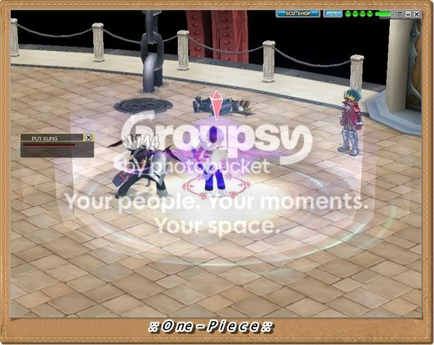
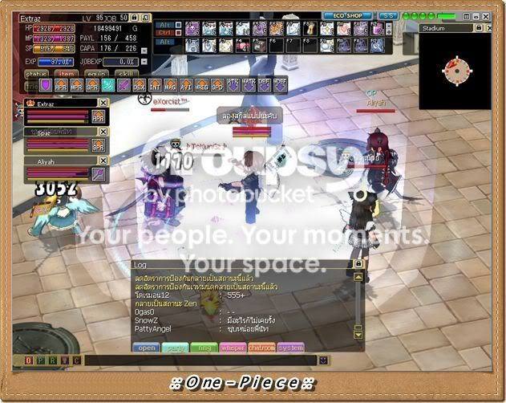

อันนี้เป็นภาพการทดสอบสกิล Dead March โดยทดสอบกับแอสสาย vit อจิ โซลครบนะครับนะครับ แต่ตัวพระมีแค่โซลชาแมนสิงอกครับ magพระ65+32(Rouse Mental) (น้อยนิด =w=)
รูปแรก dmg ที่ได้รับโดยไม่กด zen นะครับ (กดสปีด+Rouse Mental) (รูปนี้ดูดีๆจะเห็นสถานะใบ้+หลับ)

รูปนี้ให้ชาแมนกดzen (กดสปีด+Rouse Mental)

รูปนี้ขอแรงคาบามากด Evil Soul ครับ แต่ว่าก้ไม่เป็นผลต่อสกิลครับ (ในไกด์ของกระทู้นี้หน้า22ได้บอกว่า สามารถใช้ร่วมกับ Evil Soulได้ จริงๆคือไม่ได้ครับ)(Zenอยู่คับ)

รูปนี้แสดงสถานะด้านลบโดยประมาณครับ รูปแรกๆลืมซูมภาพ =w=

เพิ่มรูปคับโดนโวยว่าลองให้ไม่ครบ - -* รูปนี้ทดลองเสก dark weapon ครับ ผลที่ได้ dmg เฉลี่ยเท่ากับปกติครับ ไม่มีผลต่อสกิล (จริงๆแล้ว ไอ้dark weapon+Evil Soul นี่ควรจะคิดได้นานแล้วแหละ มันสกิลคนละสายเลย มืดกับสว่าง แล้วก็คงไม่ค่อยมีคนอัพสกิล Dark Weapon มาเพื่อใช้กับสกิลนี้หรอกครับ คาบารุ่นใหญ่เค้าไม่อัพกันเปลืองสกิล)

จากการทดสอบแล้วพบว่าสถานะที่ติด ได้แก่ Sleep,Confuse,Stun,Silent,Slow ครับ ซึ่งโดยรวมแล้วจะออกทีละ2-3สกิล สกิลโล่แสงไม่สามารถลดทอนdmgได้ครับ ไร้ธาตุ
- สกิล Dead March นั้นถือว่าเป็นสกิลที่ใช้เวลาร่ายพอสมควรเลยครับ ขนาดผมdex60+ ยังถือว่าร่ายช้าเลย แต่สามารถร่นเวลาลงได้ด้วยสกิล Musical Mastery ครับ ใครที่คิดจะโอนสกิลนี้ไปเล่นในคลาสDruid ถือว่าต้องเอาmusical masteryไปด้วยเลยครับ ระยะเวลาการร่ายหลังมีสกิล musical mastery ก็พอๆกับท่า Attract March ครับ ใช้คู่กัน workคับ ไปจับพวกโหดมาให้วงเราถลุงได้ :wink:
*** สามารถใช้ร่วมกับสกิลดีดเช่น samba ได้ ***